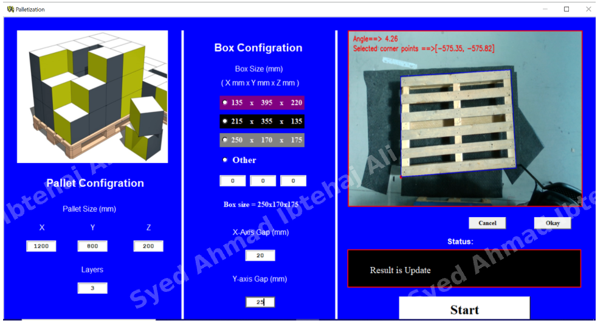
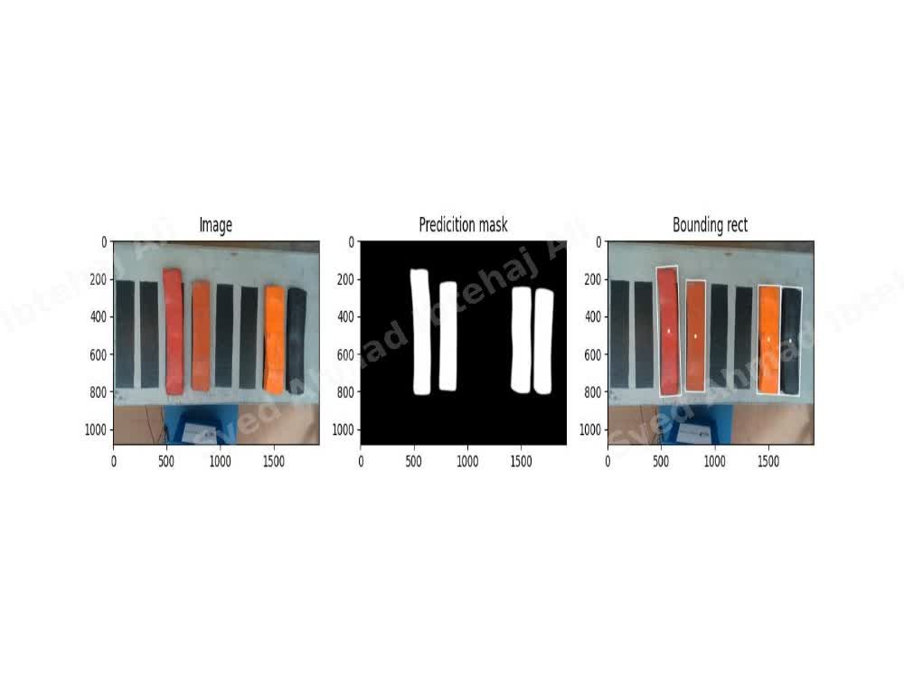
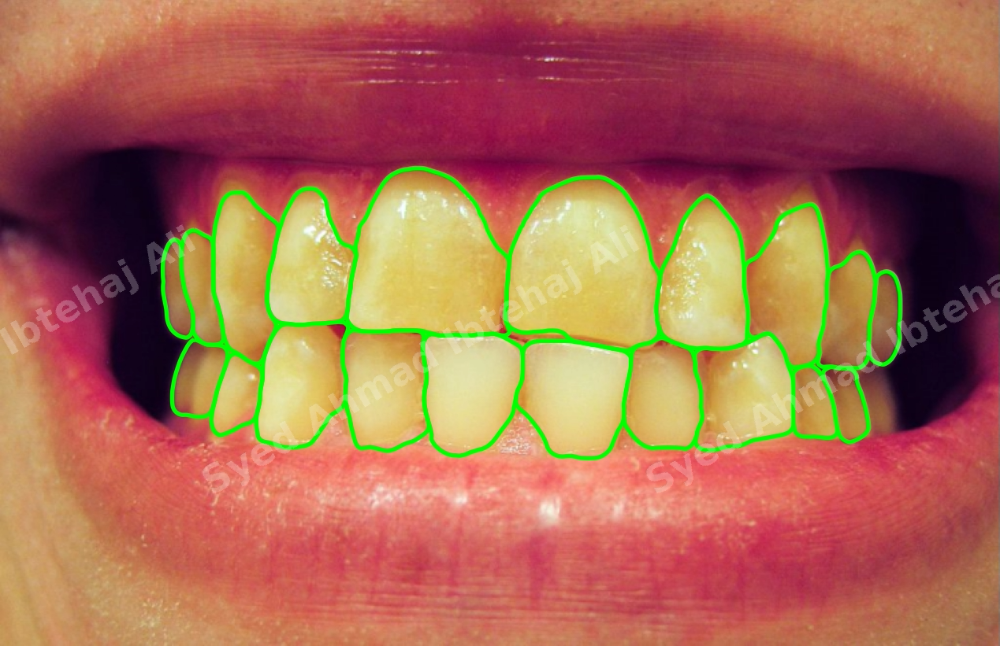
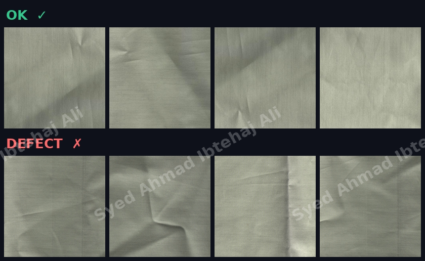
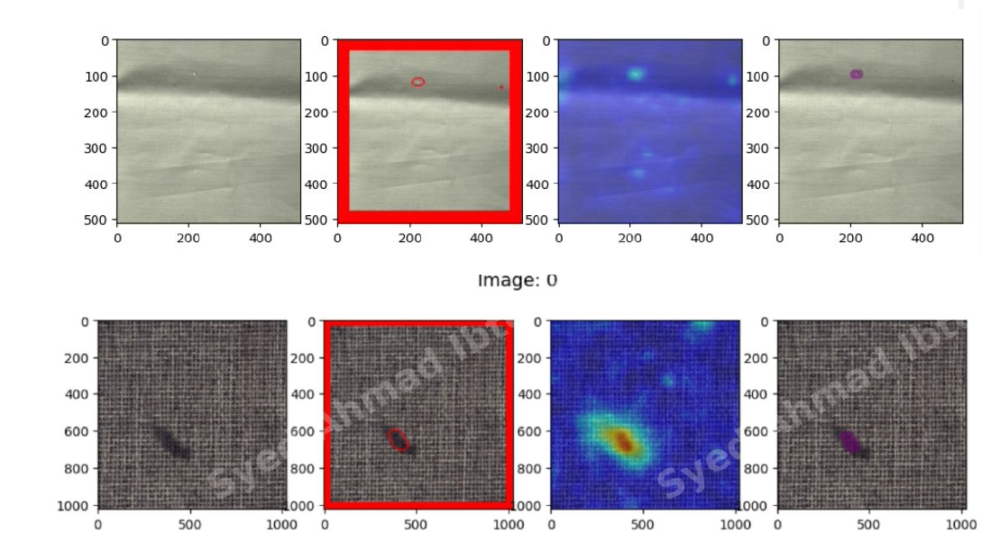
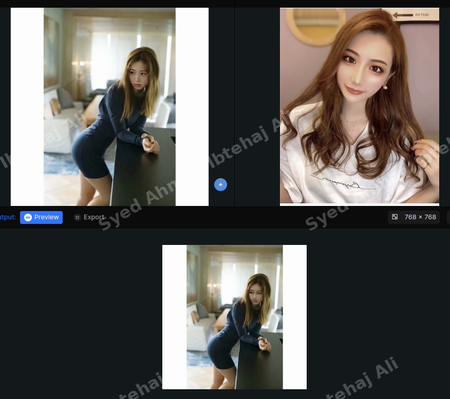
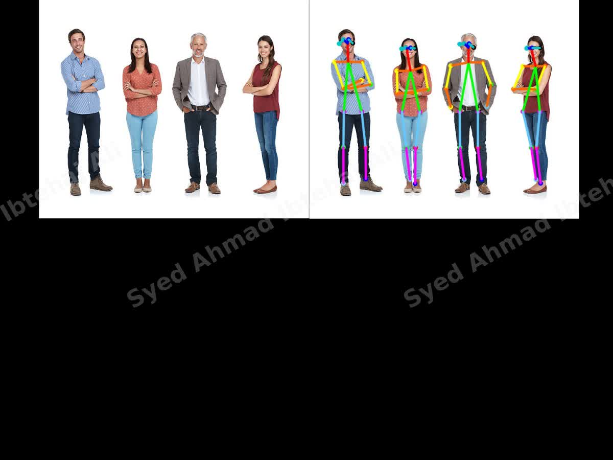
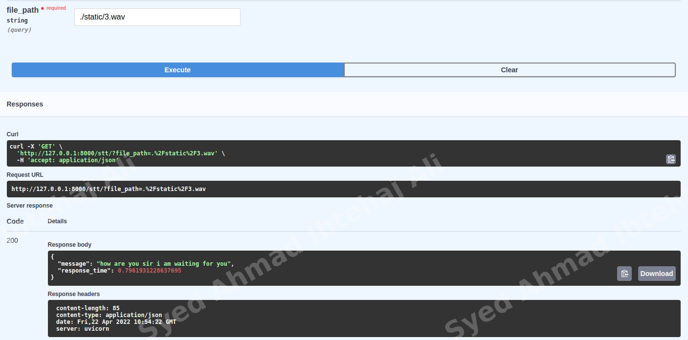
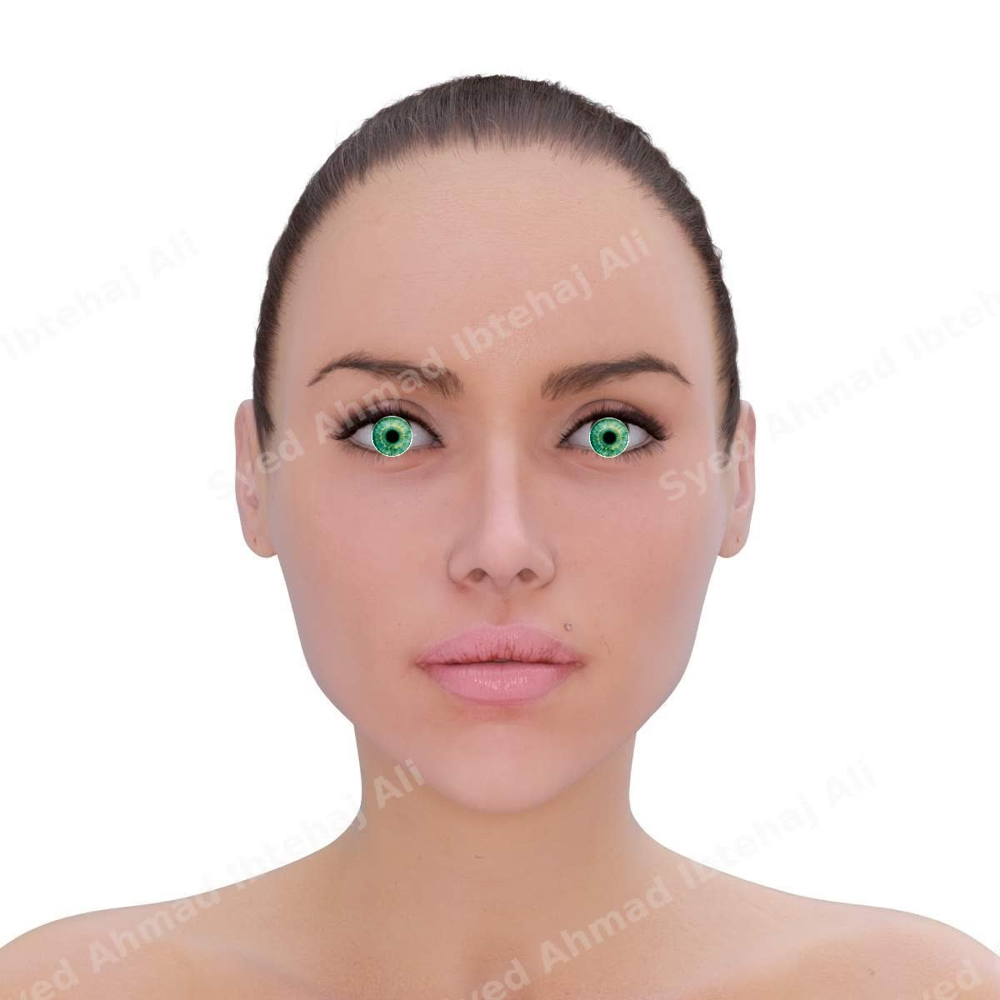

🔍
Human AI
Real-Time Multi-Object Tracking
Live tracking of a moving person across a video feed: the model locks onto the subject and keeps a stable bounding box through motion, turns and partial occlusion, frame by frame in real time.
Building intelligent vision systems that enable machines to perceive, analyze, and understand the physical world across industrial automation, safety, robotics, healthcare, and human-centered applications.
Live tracking of a moving person across a video feed: the model locks onto the subject and keeps a stable bounding box through motion, turns and partial occlusion, frame by frame in real time.

End-to-end pallet-handling system for a robotic palletizing cell. An AI vision model masks out the pallet shape precisely from cluttered backgrounds and detects its corner points and rotation angle for accurate robot placement. A novel 3D palletization optimizer then computes the best way to stack boxes on the pallet — arranging box positions, gaps and layers to maximise stability and space use — all driven from a desktop control app where the operator sets pallet size, box dimensions and layer count.

Detects colored bars on a conveyor while ignoring black ones, then segments each bar, draws its bounding box, and computes its tilt angle and center point — used for sorting and orientation-aware robotic pickup.
Object detector that spots and counts cheese wheels on a production line from an overhead camera, with confidence scores per detection — for automated inventory and packaging counts.

Dental whitening MVP: measures individual teeth shade in smile photos and calibrates colors against a standard color reference card so shade measurements stay consistent across different cameras and lighting conditions.

An anomaly-detection approach for fabric quality control: trained a model on a custom clothes dataset to separate good fabric from wrinkles, creases and weaving defects, learning only from defect-free samples.

Vision-based quality control that learns what a normal product looks like and flags scratches, dents and defects on the production line — no labelled defect data needed.
Video classification models that recognise vehicle types in traffic footage and classify road weather conditions (rain, fog, snow) for driver-assistance use cases.
A robot that listens: spoken commands are transcribed and mapped to movement in real time, combining speech recognition with motor control.

Generative vision experiments: swapping faces and replacing human parts (e.g. glasses/lenses) in photos while preserving lighting and expression.

Skeleton-based pose estimation that tracks body keypoints in images and video — the building block for gesture control, fitness tracking and safety monitoring.

Audio AI pipeline: transcribes speech to text and classifies speaker gender from voice features.
Production-line detector that counts and checks chocolates and wooden boxes, spotting empty slots and size outliers for automated packaging QC.
High-speed QR and barcode reading on industrial cameras, robust to glare, angle and motion blur.

AR-style beauty try-on: detects facial landmarks to recolor the iris (virtual contact lenses) and naturally blend earrings, necklaces and lipstick onto a face photo, respecting head pose and lighting.
An interactive voice assistant that listens to spoken questions, replies in natural language, and animates a lifelike 3D avatar face in sync with the conversation — combining speech recognition, conversational AI, and real-time facial animation.